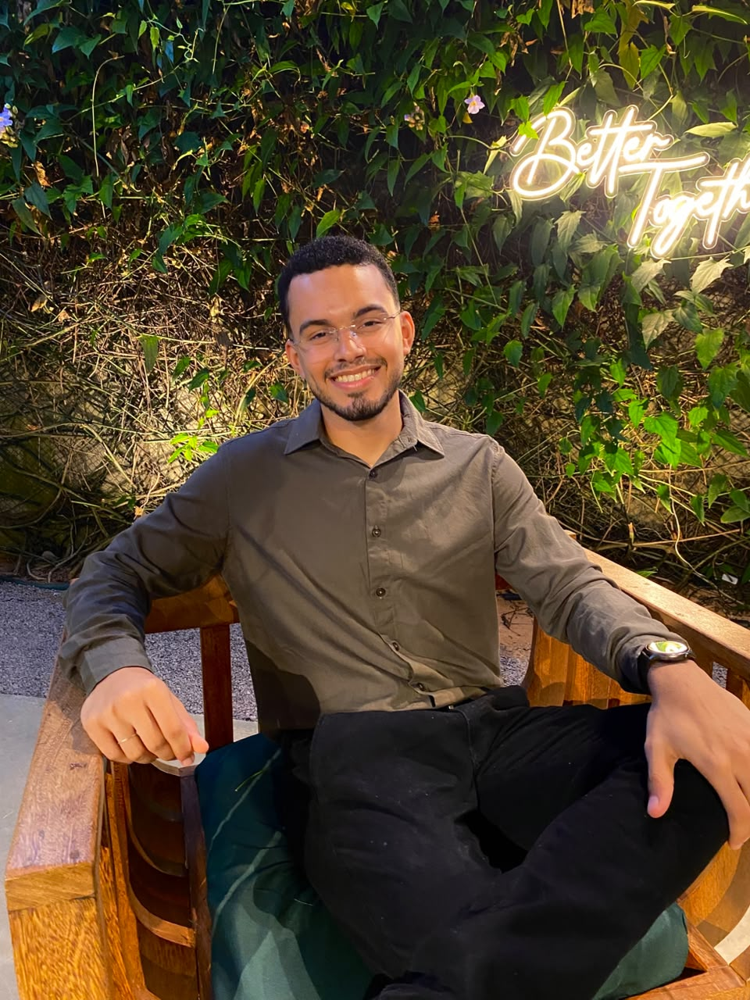
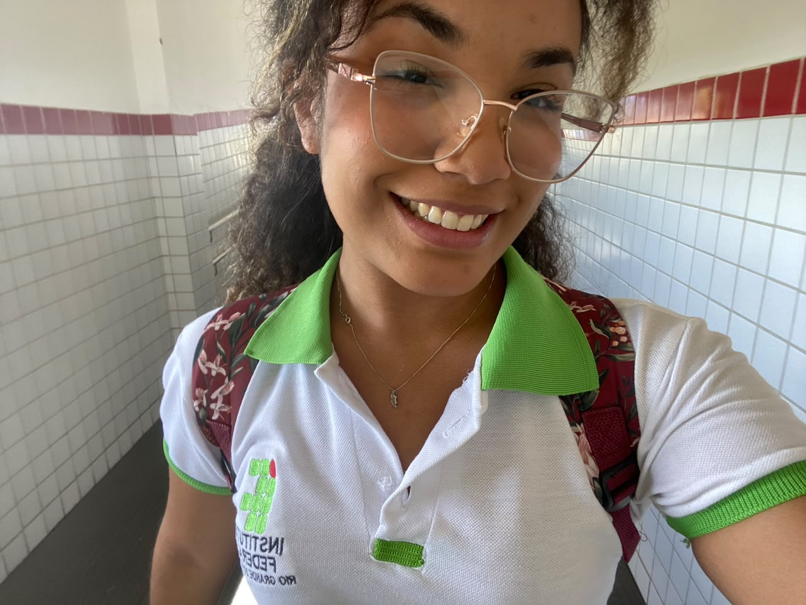
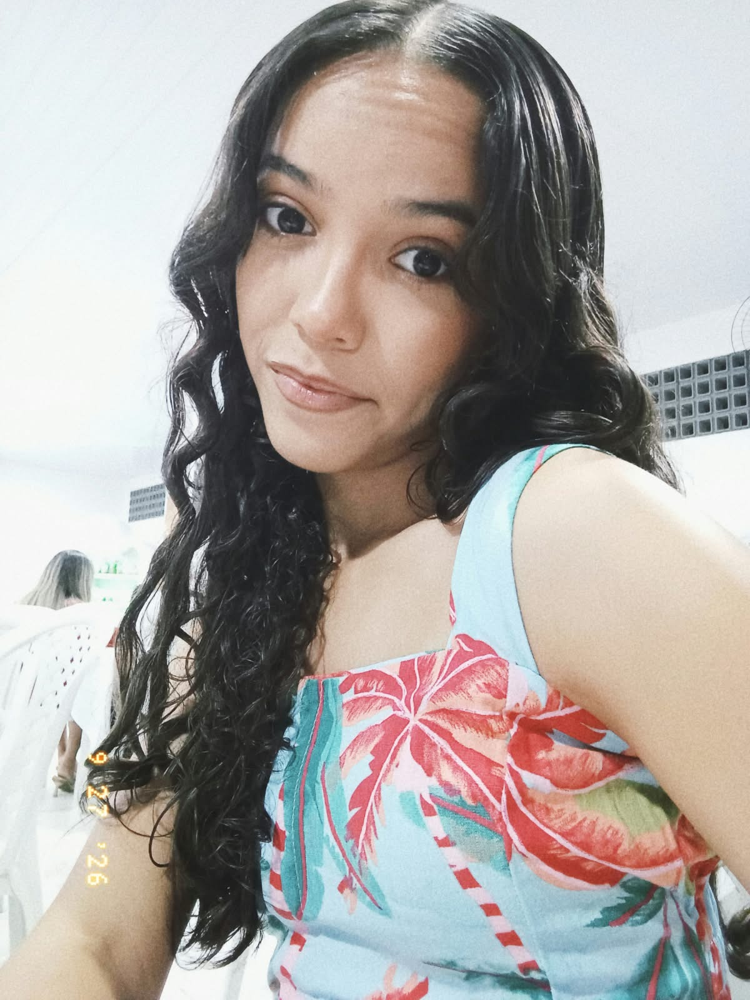

Ayslla Beatriz Soares da Silva
Estudante · Curso Técnico em Informática
O Eco Karen é um projeto de estudantes do Curso Técnico em Informática do IFRN – Campus Santa Cruz, desenvolvido para a Expotec 2026. A equipe Eco Karen é formada por quatro estudantes, com orientação de Danyel Aguiar da Silva.
A equipe Eco Karen é o grupo de estudantes responsável pelo desenvolvimento do Eco Karen.



O foco prático do projeto está nos computadores porque é a área do nosso curso. Mas o lixo eletrônico vai muito além da informática, e este site também fala sobre isso. Conheça o projeto →